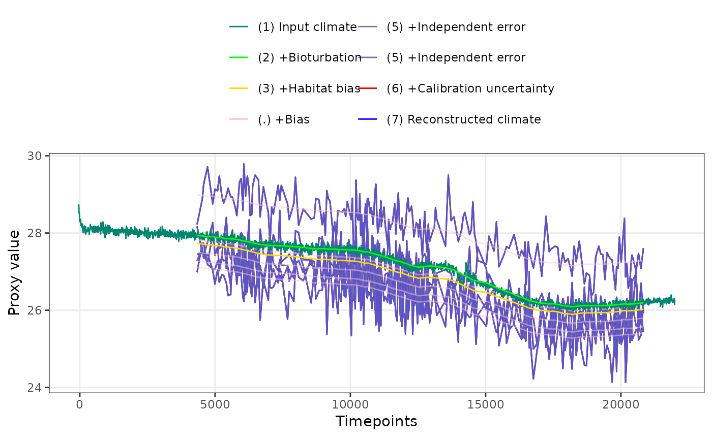

Simulate sediment archived proxy records from an input climate signal.
Source:R/ClimToProxyClim.R
ClimToProxyClim.RdClimToProxyClim simulates the creation of a proxy climate
record from a climate signal that is assumed to be true.
The following aspects of proxy creation are currently modelled.
Seasonal bias in the encoding of a proxy due to the interaction between climate seasonality and any seasonality in the life cycle of the organism encoding the climate signal (e.g. Foraminifera for Mg/Ca ratios, or phytoplankton for Alkenone unsaturation indices).
Bioturbation of the sediment archived proxy. For each requested timepoint, the simulated proxy consists of a weighted mean of the climate signal over a time window that is determined by the sediment accumulation rate sed.acc.rate and the bioturbation depth bio.depth which defaults to 10 cm. The weights are given by the depth solution to an impulse response function (Berger and Heath, 1968).
Aliasing of seasonal and inter-annual climate variation onto to bioturbated (smoothed) signal. For proxies measured on a small number of discrete particles both seasonal and inter-annual climate variation is aliased into the proxy record. For example, Foraminifera have a life-cycle of approximately 1 month, so they record something like the mean temperature from a single month. If Mg/Ca is measured on e.g.
n.samples= 30 individuals, the measured proxy signal is a mean of 30 distinct monthly mean temperatures and will thus be a stochastic sample of the true mean climate.Measurement noise/error is added as a pure Gaussian white noise process with mean = 0, standard deviation =
sqrt(sigma.meas^2 + sigma.ind^2/n.samples).Additionally, a random bias can be added to each realisation of a proxy record. Bias is simulated as a Gaussian random variable with mean = 0, standard deviation =
meas.bias. The same randomly generated bias value is applied to all timepoints in a simulated proxy record, when multiple replicate proxies are generated (n.replicates > 1) each replicate has a different bias applied.
ClimToProxyClim returns one or more replicates of the final
simulated proxy as well as several intermediate stages (see section
Value below).
Usage
ClimToProxyClim(
clim.signal,
timepoints,
calibration.type = c("identity", "Uk37", "MgCa"),
calibration = switch(calibration.type, identity = NA, Uk37 = "Mueller global", MgCa =
"Ten planktonic species_350-500"),
slp.int.means = NULL,
slp.int.vcov = NULL,
noise.type = switch(calibration.type, identity = "additive", Uk37 = "additive", MgCa
= "multiplicative"),
plot.sig.res = 100,
habitat.weights = rep(1/ncol(clim.signal), ncol(clim.signal)),
habitat.wt.args = NULL,
bio.depth = 10,
sed.acc.rate = 50,
layer.width = 1,
sigma.meas = 0,
sigma.ind = 0,
meas.bias = 0,
scale.noise = switch(calibration.type, identity = FALSE, Uk37 = TRUE, MgCa = TRUE),
n.samples = Inf,
n.replicates = 1,
top.of.core = NULL,
n.bd = 3
)Arguments
- clim.signal
The "assumed true" climate signal, e.g. climate model output or instrumental record. A
tsobject consisting of a years x 12 (months) x n habitats (e.g. depths) matrix of temperatures. The time series should be at annual resolution and in reverse, i.e. "most recent timepoint first" order.- timepoints
The timepoints for which the proxy record is to be modelled
- calibration.type
Type of proxy, e.g. Uk'37 or MgCa, to which the clim.signal is converted before the archiving and measurement of the proxy is simulated. Defaults to "identity" which means no conversion takes place.
- calibration
The name of a specific calibration for which calibration parameters are provided by sedproxy. Currently applies only to calibration.type MgCa.
- slp.int.means
Optional user supplied vector of values for the slope and intercept of the calibration function. Overides the defaults.
- slp.int.vcov
Optional user supplied variance covariance matrix calibration parameters. Overides the defaults.
- noise.type
Determines whether additive or multiplicative measurement noise is added. The appropriate type depends on the units of the proxy. Defaults to multiplicative for MgCa, additive for Uk'37 and identity (none) calibration types. Can be overidden with a string, "additive" or "multiplicative" in the case that pre-converted climate signal and measurement noise values are used in combination with an "identity" calibration type.
- plot.sig.res
The resolution, in years, of the smoothed (block averaged) version of the input climate signal returned for plotting. This does not affect what the proxy model uses as input. If set to NA, no smoothed climate output is generated, this can speed up some simulations.
- habitat.weights
Production weights for the proxy / proxy-carrier either as a vector of values with length = ncol(clim.signal), i.e. 1 weight for each month x habitat combination, a matrix of the same dimensions as the input climate signal matrix, or a function that produces an index of productivity as a function of temperature. Defaults to a vector of length = ncol(clim.signal) of equal weights.
- habitat.wt.args
A named list of parameter values to be passed to a function named in habitat.weights.
- bio.depth
Depth of the bioturbated layer in cm, defaults to 10 cm.
- sed.acc.rate
Sediment accumulation rate in cm per 1000 years. Defaults to 50 cm per ka. Either a single value, or vector of same length as "timepoints"
- layer.width
the width of the sediment layer from which samples were taken, e.g. foraminifera were picked or alkenones were extracted, in cm. Defaults to 1 cm. If bio.depth and layer.width are both set to zero, each timepoint samples from a single year of the clim.signal, equivalent to sampling an annually laminated sediment core.
- sigma.meas
The standard deviation of the measurement error added to each simulated proxy value.
- sigma.ind
The standard deviation of error between individuals (e.g. Forams) not otherwise modelled. This could included "vital effects" or aliasing of depth habitat variation not modelled via a depth resolved input climate signal and habitat weights. sigma.ind is scaled by n.samples before being combined with sigma.meas.
- meas.bias
The amount of bias to add to each simulated proxy time-series. Each replicate proxy time-series has a constant bias added, drawn from a normal distribution with mean = 0, sd = meas.bias. Bias defaults to zero.
- scale.noise
Scale noise to proxy units. Defaults to TRUE if calibration.type is not "identity"
- n.samples
Number of e.g. Foraminifera sampled per timepoint, this can be either a single number, or a vector of length = timepoints. Can be set to Inf for non-discrete proxies, e.g. for Uk’37.
- n.replicates
Number of replicate proxy time-series to simulate from the climate signal
- top.of.core
The theoretical minimum age at the top of the core, ie. the year the core was sampled, defaults to the start of clim.in
- n.bd
Number of multiples of the bioturbation width at which to truncate the bioturbation filter
Value
ClimToProxyClim returns an object of class "sedproxy.pfm", a list with three elements:
a dataframe
simulated.proxya dataframe
smoothed.signala dataframe
everything
The dataframe simulated.proxy contains a single realisation of the
final forward modelled proxy, as well as the intermediate stages and the
original climate signal at the requested timepoints.
The dataframe smoothed.signal contains a block averaged version the
input climate signal, defaults to 100 year means but this is set by the
parameter plot.sig.res. This is useful for plotting against the
resulting simulated proxy.
The dataframe everything contains all of the above but with multiple
replicates of the pseudo-proxy records if requested. The data are in
"long form", with the column "stage" inidcating the proxy stage or input
climate resolution and column "value" giving the values.
Named elements of the returned proxy record:
- timepoints
Requested timepoints
- clim.signal.ann
Input climate signal at requested timepoints at annual resolution
- clim.signal.smoothed
Input climate signal at regular time intervals and resolution = plot.sig.res
- clim.timepoints.ssr
Input climate signal at requested timepoints, smoothed to resolution = plot.sig.res
- proxy.bt
Climate signal after bioturbation
- proxy.bt.sb
Climate signal after bioturbation and habitat bias
- proxy.bt.sb.inf.b
Climate signal after bioturbation, habitat bias, and calibration bias
- proxy.bt.sb.inf.b.n
Climate signal after bioturbation, habitat bias, and measurement error
- proxy.bt.sb.sampY
Climate signal after bioturbation, habitat bias, and aliasing of inter-annual variation
- proxy.bt.sb.sampYM
Climate signal after bioturbation, habitat bias, and aliasing of inter-annual and intra-annual variation such as monthly temperatures or depth habitats
- proxy.bt.sb.sampYM.b
Climate signal after bioturbation, habitat bias, and aliasing of inter-annual and intra-annual variation such as monthly temperatures or depth habitats, and calibration bias
- proxy.bt.sb.sampYM.b.n
Climate signal after bioturbation, habitat bias, aliasing, and measurement error
- simulated.proxy
Final simulated pseudo-proxy, this will be same as proxy.bt.sb.inf.b.n when n.samples = Inf, and proxy.bt.sb.sampYM.b.n when n.samples is finite
- observed.proxy
True observed proxy (when supplied)
Examples
library(ggplot2)
set.seed(26052017)
clim.in <- ts(N41.t21k.climate[nrow(N41.t21k.climate):1,] - 273.15, start = -39)
PFM <- ClimToProxyClim(clim.signal = clim.in,
timepoints = round(N41.proxy$Published.age),
calibration.type = "identity",
habitat.weights = N41.G.ruber.seasonality,
sed.acc.rate = N41.proxy$Sed.acc.rate.cm.ka,
layer.width = 1,
sigma.meas = 0.46,
sigma.ind = 0, n.samples = Inf,
plot.sig.res = 10, meas.bias = 1,
n.replicates = 10)
PlotPFMs(PFM$everything, max.replicates = 1, stage.order = "seq") +
facet_wrap(~stage)
#> Joining, by = c("stage", "scale")
#> Scale for 'alpha' is already present. Adding another scale for 'alpha', which
#> will replace the existing scale.
PlotPFMs(PFM$everything, max.replicates = 1, stage.order = "var")
#> Joining, by = c("stage", "scale")
#> Scale for 'alpha' is already present. Adding another scale for 'alpha', which
#> will replace the existing scale.
PlotPFMs(PFM$everything, stage.order = "var", plot.stages = "all")
#> Joining, by = c("stage", "scale")
#> Scale for 'alpha' is already present. Adding another scale for 'alpha', which
#> will replace the existing scale.
